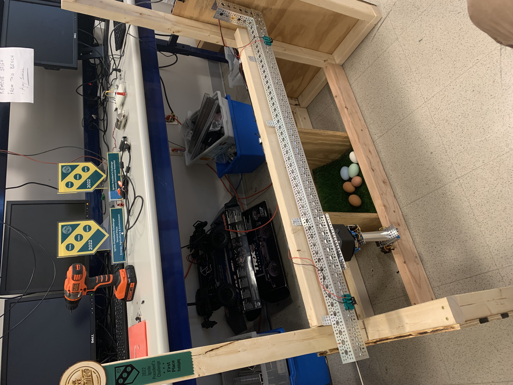
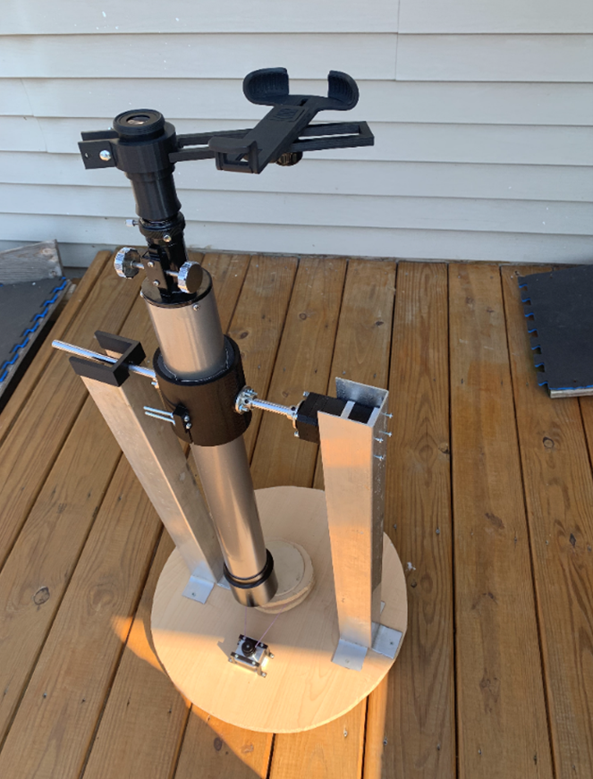
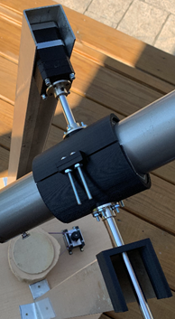
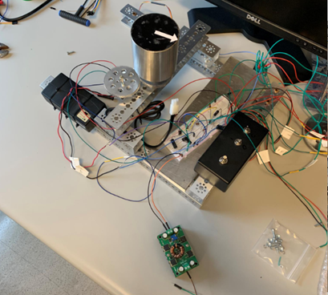

Projects:
Automated Chicken Coop-
For Clarkson’s President’s Challenge (which is a semester long competition held at the school for all students to participate in), I was a member of a team consisting of several undergraduates that attempted to fully automate a chicken coop. The functions which the coop was intended to perform included, automatic egg harvesting, thermal control, automatic feeding, monitoring of toxic gases, and the opening of the door.
The eggs are identified with a camera, which has an algorithm using OpenCV that identifies when an egg is present and what the location of the egg is, which is then used to guide the arm to the location of the egg. Everything was ultimately controllable from an online IO server, allowing one to automate all of the duties which one would typically carry out with a chicken coop and more. My role on the team has involved the following: general development of the software on the Raspberry Pi, conifiguration and interfacing of the hardware (e.g., motor drivers, limit switches) with the Pi, and the design and 3D printing of various parts (e.g., brackets, mounts etc.).
We were ultimately able to win several awards for the project, including best prototype and most commercially viable product.

Lawn Rover-
As a side project outside of school, I began to prototype a robot which would travel randomly around one’s yard and cut down weeds if it detected one.
The rover itself goes in a straight line until the sonic sensors detect an object in it’s path, which tells the rover to make a slight turn. Hence the cart will randomly go around one’s yard, given that the yard is enclosed by a fence. There is an array of ultrasonic sensors positioned at the front of the rover which is designed to detect is there is a surface anomaly such as a weed, which will then signal to the robot to stop and cut the weed down. The robot will then proceed until it finds another weed. The code is uploaded to GitHub here.
Telescope Computerization-
Over the summer of 2021, it was a goal of mine to be able to control and view the output of my telescope on a laptop.

In order to spin the telescope azimuthally, another stepper motor was employed on the base of the platform. The platform was connected to a stationary block via a turntable tray. The stepper motor was connected to this stationary block with a belt, therefore allowing it to roll along the belt and spin the platform.
The two stepper motors are connected to two motor drivers as well as a variable power supply. The motor drivers are connected to an Arduino Uno, which is controlled through a combination of the Arduino IDE and Processing. It is of future interest to encase the electronics into a box that rests on the platform.

The image of the telescope is captured with the use of a smart phone. A clamp was designed such that it allowed one to line their camera up to the eye piece of the telescope. The phone app EpocCam was then used to transmit the image to the computer.
Satellite Dish Control-
As a final project for our controls class EE450, our group was tasked with designing a controller for a satellite dish. This was then to be implemented into a real-life lab apparatus.

The user sets a desired input with the twisting of a potentiometer, which was then sent to a differential amplifier, our controller, a power amplifier, then the DC motor. Another potentiometer was connected to the dish, which was used as a feedback signal. My main focus during the project was the creation of the controller. Using several control theory techniques, I designed a lead-lag controller which was designed to meet the desired specifications (e.g., settling time and percent overshoot).